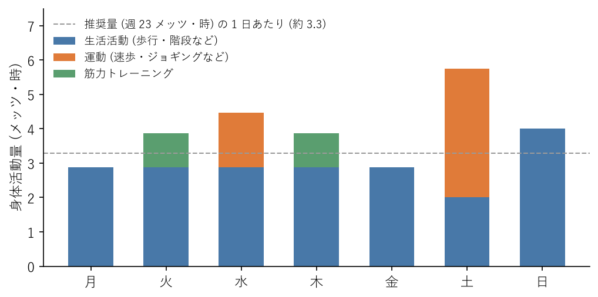

7. 運動習慣
この章では、推奨される身体活動と運動の量、運動の強さの表し方、有酸素運動と筋力トレーニングの始め方、運動と睡眠の関係、安全に運動するための注意を説明する。最後に、1 週間の計画の例と、身体活動量を計算するサンプルコードを紹介する。
7.1. 推奨される身体活動と運動の量
身体活動とは、安静にしている状態よりも多くのエネルギーを消費する、すべての動きのことである。身体活動は、日常生活の中で行う生活活動（通勤で歩く、階段を上る、家事をするなど）と、体力の維持や向上を目的に計画的に行う運動（ジョギング、筋力トレーニングなど）に分けられる。
身体活動・運動ガイドは、成人に対して次のことを推奨している。
項目 |
推奨事項 |
|---|---|
身体活動 |
歩行またはそれと同等以上の強度（3 メッツ以上）の身体活動を 1 日 60 分以上行う。1 日約 8,000 歩以上に相当し、週 23 メッツ・時以上が目安である。 |
運動 |
息が弾み汗をかく程度以上（3 メッツ以上）の運動を週 60 分以上行う。週 4 メッツ・時以上が目安である。 |
筋力トレーニング |
上記の運動の一部として、週 2〜3 日行う。 |
座位行動 |
座りっぱなしの時間が長くなりすぎないように注意する。 |
あわせて、身体活動・運動ガイドは、個人差を踏まえて強度や量を調整し、可能なものから取り組むこと、今よりも少しでも多く体を動かすことを勧めている。推奨量に届かないからといって、あきらめる必要はない。1 日 10 分歩く時間を増やすだけでも、健康上の効果が期待できる。
7.2. 運動の強さと量の表し方
7.2.1. メッツ
身体活動の強さは、メッツという単位で表す。座って安静にしている状態を 1 メッツとして、その何倍のエネルギーを消費するかを示す。3 メッツ以上が中強度、6 メッツ以上が高強度とされる。主な活動のメッツの値を次の表に示す。
活動 |
メッツ |
区分 |
|---|---|---|
座ってデスクワークをする |
1.3 |
座位行動 |
立ってパソコン作業をする |
1.3 |
低強度 |
ストレッチ（ゆったり） |
2.3 |
低強度 |
歩く（時速 4 km 程度） |
3.0 |
中強度 |
自重の筋力トレーニング（スクワット、腕立て伏せなど） |
3.0 |
中強度 |
歩く（時速 4.5〜5.5 km） |
3.8 |
中強度 |
自転車に乗る（時速 16 km 未満） |
4.0 |
中強度 |
階段をゆっくり上る |
4.5 |
中強度 |
速歩（時速 5.7〜6.3 km） |
4.8 |
中強度 |
ジョギング |
7.5 |
高強度 |
7.2.2. メッツ・時と消費エネルギー
身体活動の量は、強さ（メッツ）に実施した時間を掛けたメッツ・時という単位で表す。
たとえば、時速 4 km 程度の歩行（3.0 メッツ）を 1 時間行うと 3.0 メッツ・時、速歩（4.8 メッツ）を 30 分行うと 2.4 メッツ・時になる。身体活動・運動ガイドが推奨する「週 23 メッツ・時」は、3 メッツの歩行を毎日 1 時間あまり行う量に相当する。
身体活動による消費エネルギーは、次の式で概算できる。
体重 60 kg の人が速歩を 30 分（2.4 メッツ・時）行うと、約 151 kcal を消費する。この値には、安静にしていても消費する分も含まれる。
7.2.3. 主観的な強さ
運動中にメッツの値を確かめるのは難しい。実際には、自分が感じるきつさ（主観的運動強度）を目安にするとよい。中強度の運動は、「楽である」から「ややきつい」と感じる程度で、息が弾むが会話はできる強さである。高強度の運動は、「きつい」と感じ、会話が難しくなる強さである。
7.3. 有酸素運動
ウォーキング、ジョギング、自転車、水泳のように、大きな筋肉を使って一定のリズムで長く続ける運動を有酸素運動という。有酸素運動には次のような効果がある。
心臓と肺の働きが高まり、持久力が向上する。
血圧、血糖値、血液中の脂質が改善する。
体脂肪が減りやすくなる。
気分が前向きになり、ストレスが和らぐ。
寝つきがよくなり、深い睡眠が増える。
運動の習慣がない人は、まず速歩から始めるとよい。特別な道具が要らず、けがの危険も少ない。
最初は 1 回 10 分程度から始め、慣れたら 1 回 20〜30 分に延ばす。
通勤の途中で 1 駅分歩く、昼休みに歩く、在宅勤務の日に始業前に歩く、というように、生活の中に組み込むと続けやすい。
10 分程度の短い運動を 1 日に何回かに分けて行ってもよい。
速歩に慣れて物足りなくなったら、ジョギングや自転車、水泳などを取り入れる。強度を上げる場合は、時間や距離を少しずつ増やす。
7.4. 筋力トレーニング
筋力トレーニングは、筋肉に負荷をかけて、筋力と筋肉の量を維持・向上させる運動である。筋力トレーニングには次のような効果がある。
筋力が向上し、日常の動作が楽になる。
体幹やお尻の筋肉が強くなり、よい姿勢を保ちやすくなり、腰痛の予防にもつながる。
筋肉が血液中の糖を取り込みやすくなり、血糖値が改善する。
加齢による筋肉の減少を防ぐ。
ジムに通わなくても、自分の体重を負荷にする自重トレーニングで十分に始められる。座り仕事で弱りやすい脚、お尻、体幹を中心に、次のような種目を組み合わせるとよい。
種目 |
方法 |
主に鍛える部位 |
|---|---|---|
スクワット |
足を肩幅に開いて立ち、椅子に腰掛けるようにお尻を後ろに引きながら膝を曲げ、太ももが床と平行になる手前まで下ろす。膝がつま先より前に大きく出ないようにする。 |
太もも、お尻 |
腕立て伏せ |
手を肩幅より少し広く床につき、頭からかかとまでを一直線に保って、体を下ろして上げる。きつい場合は膝をついて行う。 |
胸、腕、肩 |
プランク |
うつ伏せで両肘とつま先を床につき、頭からかかとまでを一直線に保つ。腰が反ったり、落ちたりしないようにする。 |
体幹 |
ヒップリフト |
仰向けで膝を立て、お尻を持ち上げて、肩から膝までを一直線にする。ゆっくり下ろす。 |
お尻、太ももの裏 |
バードドッグ |
四つんばいになり、右手と左脚を床と平行になるまで伸ばして数秒保つ。反対側も同様に行う。 |
体幹、背中、お尻 |
カーフレイズ |
壁や机に手を添えて立ち、かかとをゆっくり上げ下げする。 |
ふくらはぎ |
回数とセット数は、次のようにするとよい。
プランク以外の種目は、1 セット 10〜15 回を目安にする。最初は 1 セットから始め、慣れたら 2〜3 セットに増やす。プランクは 20〜30 秒から始める。
週に 2〜3 日、間に 1〜2 日の休養をはさんで行う。筋肉は休養の間に回復し、強くなる。
動作はゆっくり行い、息を止めずに自然に呼吸を続ける。息を止めて力むと、血圧が急に上がる。
正しい姿勢で行うことを優先する。回数を増やすために姿勢が崩れるなら、回数を減らす。
7.5. 柔軟性とストレッチ
体の柔らかさ（柔軟性）を保つと、関節を楽に動かせるようになり、けがの予防にもつながる。座り仕事では、太ももの裏、股関節の前側、胸の筋肉が縮んだ状態が続き、硬くなりやすい。
ストレッチには、反動をつけずに筋肉をゆっくり伸ばして保つ静的ストレッチと、関節を大きく動かしながら筋肉をほぐす動的ストレッチがある。
運動の前には、腕や脚を大きく回す、その場で足踏みをする、などの動的ストレッチで体を温める。
運動の後や入浴後、就寝前には、静的ストレッチで筋肉をゆっくり伸ばす。
机の周りでできるストレッチは、座りすぎを防ぐで紹介した。
7.6. 運動と睡眠の関係
定期的な運動は、寝つきをよくし、深いノンレム睡眠を増やす。日中に体を動かすことで睡眠圧が高まり、体温のリズムにも張りが出るためである。運動の習慣がある人は、睡眠の悩みが少ない傾向がある。
運動する時間帯は、生活に合わせて選べばよい。
朝：屋外でのウォーキングなどは、朝の光を浴びることにもなり、体内時計を整える効果がある。
夕方から夜の早い時間：体温が高く体がよく動く時間帯で、運動に向いている。
就寝直前：激しい運動は、体を興奮させ、寝つきを悪くすることがある。就寝前の 1 時間ほどは、激しい運動を避け、軽いストレッチ程度にとどめる。
7.7. 安全に運動するために
運動による効果を得るには、けがや事故を防ぎ、安全に続けることが大切である。
運動の前には準備運動、後には整理運動を行う。
運動の前、運動中、運動後に水分をとる。
運動の量や強度は、急に増やさず、少しずつ増やす。
痛みのある部位を無理に動かさない。運動中や運動後に関節や筋肉の痛みが続く場合は、運動を休む。
発熱しているとき、体調が悪いとき、睡眠不足や飲酒の後は、運動を控える。
運動中に胸の痛みや圧迫感、強い息切れ、動悸、めまいなどを感じたら、すぐに運動を中止する。症状が治まらない場合は、ためらわずに救急車を呼ぶ（不調のサインと受診の目安を参照）。持病がある人や治療中の人は、運動を始める前に医師に相談する。
7.8. 1 週間の計画の例
身体活動・運動ガイドの推奨量を満たす、出社日のある 1 週間の計画の例を次の表に示す。
曜日 |
内容 |
|---|---|
月 |
通勤などで歩く（50 分）、階段を上る（5 分）、就寝前のストレッチ（10 分） |
火 |
通勤などで歩く（50 分）、階段を上る（5 分）、自重の筋力トレーニング（20 分） |
水 |
通勤などで歩く（50 分）、階段を上る（5 分）、帰りに速歩（20 分） |
木 |
通勤などで歩く（50 分）、階段を上る（5 分）、自重の筋力トレーニング（20 分） |
金 |
通勤などで歩く（50 分）、階段を上る（5 分）、就寝前のストレッチ（10 分） |
土 |
買い物などで歩く（40 分）、ジョギング（30 分） |
日 |
買い物などで歩く（40 分）、自転車に乗る（30 分） |
この計画の曜日ごとの身体活動量を図 7.1 に示す。平日は通勤などの生活活動が中心だが、週末の運動と合わせて、週の合計は推奨量を上回る。在宅勤務の日は、通勤で歩く分を朝や昼休みの散歩で補う必要がある。


図 7.1 1 週間の身体活動量の例（3 メッツ以上の身体活動）
7.9. 身体活動量を計算するサンプルコード
1 週間の活動記録から、身体活動量と消費エネルギーを計算し、推奨量と比べるサンプルコード activity_calc.py を用意した。ファイルはサンプルコードからダウンロードできる。上の計画の例は、サンプルデータ activity_sample.csv として同梱している。
7.9.1. 記録の形式
活動記録は、曜日（day）、活動の種類（activity）、時間（分、minutes）の 3 列からなる CSV ファイルにする。
1day,activity,minutes
2月,walk,50
3月,stairs,5
4月,stretch,10
5火,walk,50
6火,stairs,5
7火,bodyweight,20
活動の種類には、次のコードで定義した名前を使う。メッツの値は、前述の表と同じである。
39ACTIVITIES: dict[str, Activity] = {
40 "desk_work": Activity("座ってデスクワーク", 1.3, False),
41 "standing_work": Activity("立ってパソコン作業", 1.3, False),
42 "walk": Activity("歩く (時速 4 km 程度)", 3.0, False),
43 "walk_moderate": Activity("歩く (時速 4.5〜5.5 km)", 3.8, False),
44 "stairs": Activity("階段をゆっくり上る", 4.5, False),
45 "cycle": Activity("自転車に乗る (時速 16 km 未満)", 4.0, False),
46 "stretch": Activity("ストレッチ (ゆったり)", 2.3, True),
47 "bodyweight": Activity("自重の筋力トレーニング", 3.0, True, is_strength=True),
48 "brisk_walk": Activity("速歩 (時速 5.7〜6.3 km)", 4.8, True),
49 "jogging": Activity("ジョギング", 7.5, True),
50}
Activity の 3 番目の値は、その活動が運動かどうかを表す。4 番目の値は、筋力トレーニングかどうかを表す。ここにない活動を記録したい場合は、メッツ表で値を調べて追加すればよい。
7.9.2. 使い方
端末で次のように実行する。--weight には体重（kg）を指定する。
1python activity_calc.py activity_sample.csv --weight 65
実行すると、次のように表示される。
曜日ごとの身体活動量 (3 メッツ以上)
月: 2.9 メッツ・時
火: 3.9 メッツ・時
水: 4.5 メッツ・時
木: 3.9 メッツ・時
金: 2.9 メッツ・時
土: 5.8 メッツ・時
日: 4.0 メッツ・時
身体活動 : 27.7 メッツ・時/週 (目安 23 以上) 達成
運動 : 7.3 メッツ・時/週 (目安 4 以上) 達成
筋トレ : 2 日/週 (目安 2〜3 日) 達成
消費エネルギー (記録した活動の合計) : 約 1,945 kcal
7.9.3. コードの説明
集計は summarize 関数で行う。
92def summarize(entries: list[Entry], weight_kg: float) -> WeeklySummary:
93 """1 週間分の活動記録を集計する。"""
94 moderate = [e for e in entries if e.activity.mets >= MODERATE_METS]
95 return WeeklySummary(
96 activity_mets_hours=sum(e.mets_hours for e in moderate),
97 exercise_mets_hours=sum(e.mets_hours for e in moderate if e.activity.is_exercise),
98 strength_days=len({e.day for e in entries if e.activity.is_strength}),
99 # 消費エネルギー (kcal) ≒ 1.05 × メッツ・時 × 体重 (kg)
100 energy_kcal=sum(1.05 * e.mets_hours * weight_kg for e in entries),
101 )
身体活動・運動ガイドの推奨量は 3 メッツ以上の活動を数えるため、まず 3 メッツ以上の記録だけを取り出す。身体活動量はその合計、運動量はそのうち運動に当たるものの合計である。筋力トレーニングの日数は、筋力トレーニングを記録した曜日の数を数える。消費エネルギーは、前述の式を使って、記録したすべての活動について計算する。